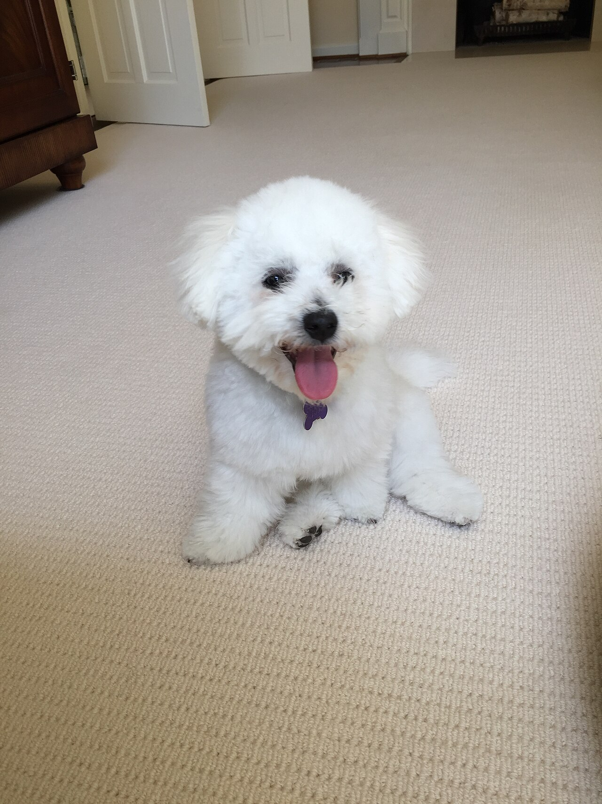
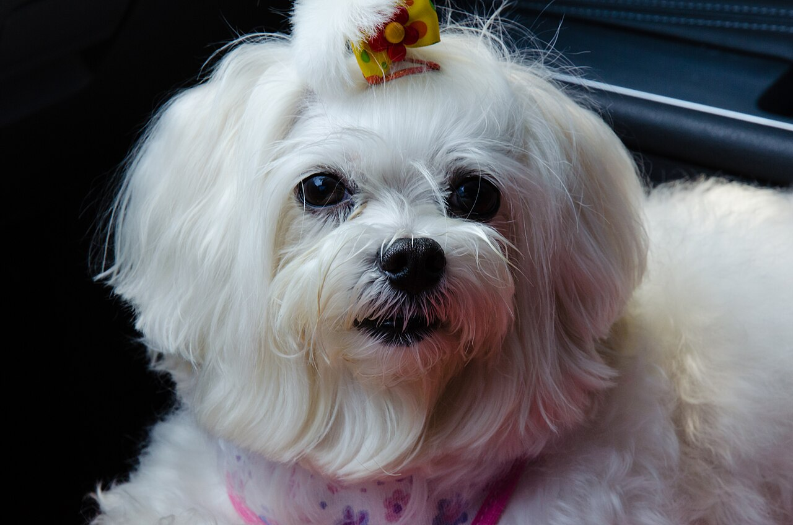
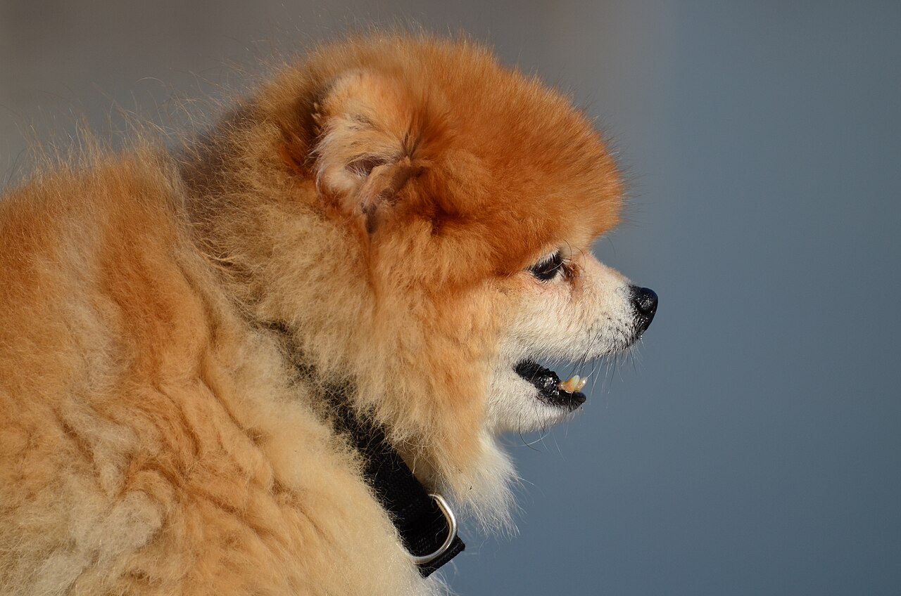
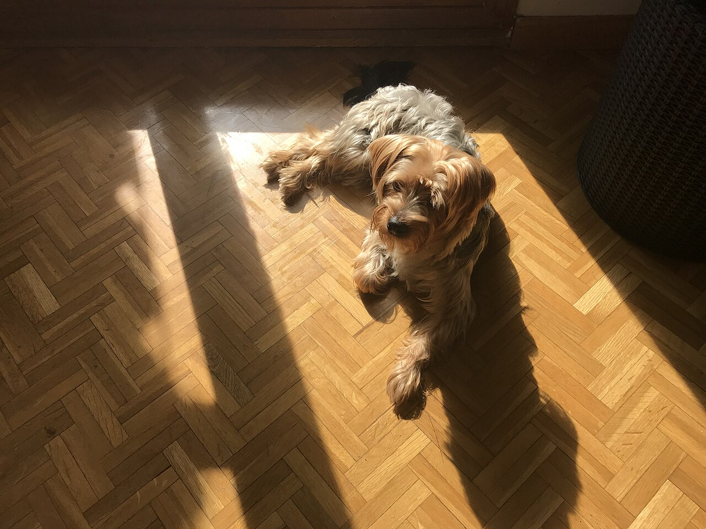
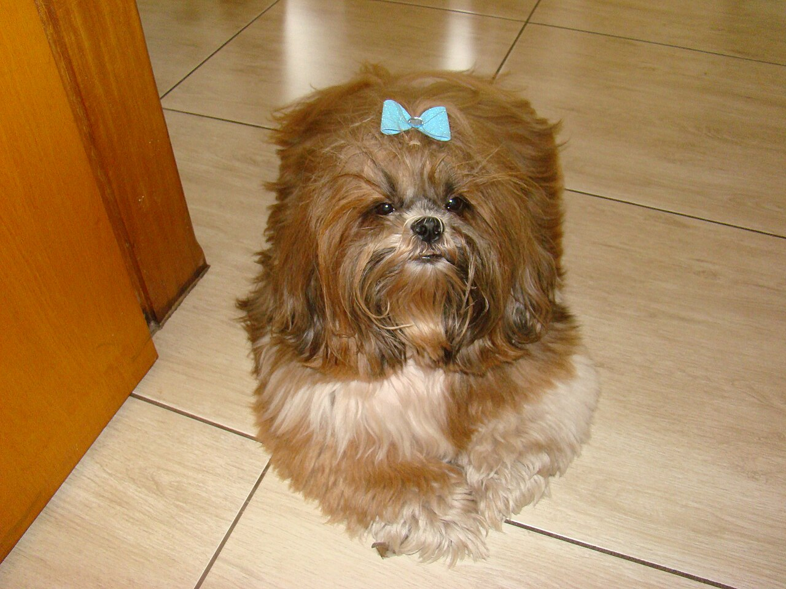
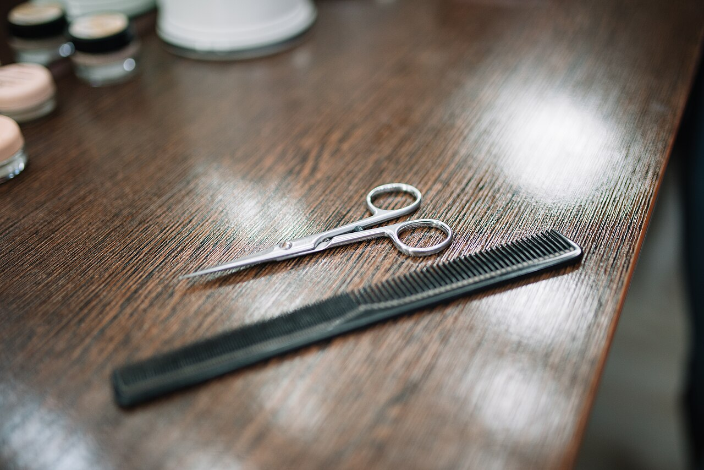
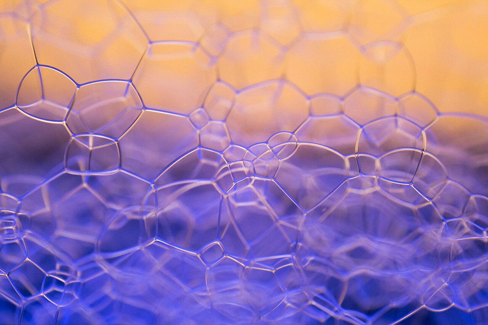
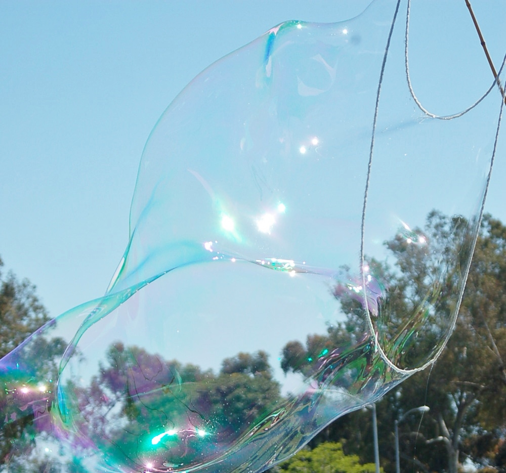
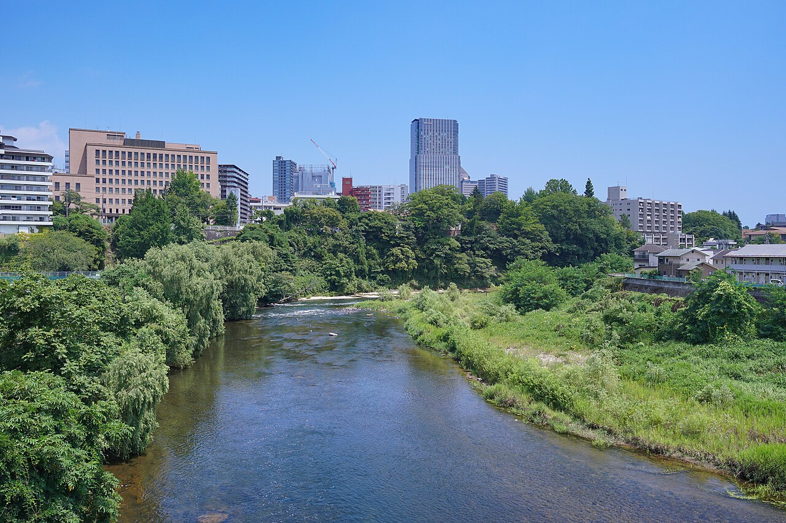
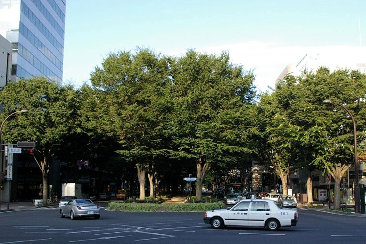

ペットサロン・トリミング / 仙台市青葉区小松島
ひと梳き、ふわり。
※キャッチコピーは制作側の案です。店舗の理念ではありません。
Trimming salon maira
仙台市青葉区小松島のペットサロンです。メニューや料金など、詳しい内容はお問い合わせください。
- 所在地
- 宮城県仙台市青葉区小松島4丁目24-15 East Seven 1階
地図を見る - 営業時間
- 準備中(お問い合わせください)
- 定休日
- 準備中(お問い合わせください)
仕上がるまでの流れ
一般的なペットサロンの流れを見出しだけでご紹介します。実際の手順や内容は、お問い合わせください。
- 1受付内容はお問い合わせください
- 2シャンプー内容はお問い合わせください
- 3ブラッシング内容はお問い合わせください
- 4カット内容はお問い合わせください
- 5仕上げ内容はお問い合わせください
※一般的な流れの目安であり、店舗の実際の手順を示すものではありません。
ふわり、の景色



※写真はイメージです。店舗の実際の様子ではありません。
仙台市青葉区 小松島エリア
お店は仙台市青葉区小松島にあります。住所は「宮城県仙台市青葉区小松島4丁目24-15 East Seven 1階」です。最寄り駅・バス・駐車場など、詳しい行き方は準備中です(お問い合わせください)。

